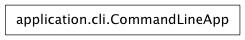

An object that runs commands passed from an external invocation of the program.
Command Line Options:
Command Line Application
usage: run <command> [options]
Commands:
-h --help Display help message and usage.
Display help message and usage.
Open local file fname in a web browser.
Call a shell command.